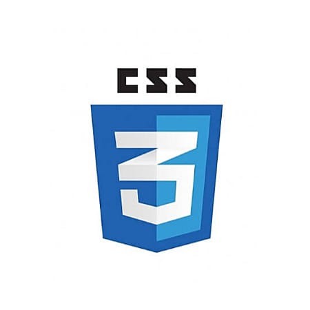

About Me
Hello! Selamat datang di biodata
Anda bisa memanggil saya Mega
- Tempat Tanggal Lahir: Bandung,23 Oktober 2005
- Telepon: 083171714818
- Kota: Bandung, Jawa Barat
- Kesukaan: Memasak Dan Menari
- Hobi: Beladiri,Menari,Memasak
- Ekstrakulikuler: Osis,Kesenian,Rohis
"Teknologi tidak akan pernah punah bahkan akan semakin terus maju"
Skill
